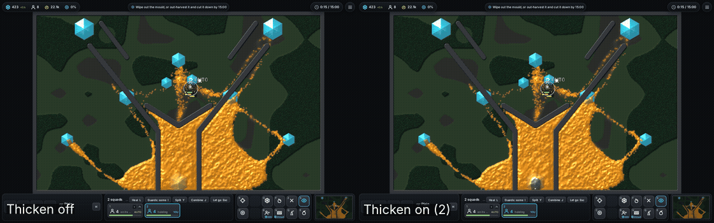

<title>Slime Thickening</title>
<meta name="claude:viewport-fit-sides" content="cover">
<link rel="stylesheet" href="https://fonts.googleapis.com/css2?family=Bricolage+Grotesque:opsz,wght@12..96,600;12..96,750&family=Source+Sans+3:wght@400;600&family=JetBrains+Mono:wght@400&display=swap">
<style>
/* Layout: one reading column, clips full width of it, findings as numbered items because they are ranked */
:root{
  --bg:#f3f2ec; --panel:#e8e6dc; --fg:#1d211c; --muted:#5b6157;
  --slime:#c77a06; --slime-soft:#f2d49a; --crystal:#1590a8; --line:#cfccbf;
  --display:"Bricolage Grotesque", "Segoe UI", system-ui, sans-serif;
  --body:"Source Sans 3", "Segoe UI", system-ui, sans-serif;
  --mono:"JetBrains Mono", ui-monospace, Consolas, monospace;
}
@media (prefers-color-scheme: dark){:root:not([data-theme="light"]){
  --bg:#141812; --panel:#1d231b; --fg:#e7e9e1; --muted:#9aa294;
  --slime:#f1a12a; --slime-soft:#4a3410; --crystal:#5cc8dc; --line:#2f382c; color-scheme:dark}}
:root[data-theme="dark"]{
  --bg:#141812; --panel:#1d231b; --fg:#e7e9e1; --muted:#9aa294;
  --slime:#f1a12a; --slime-soft:#4a3410; --crystal:#5cc8dc; --line:#2f382c; color-scheme:dark}
body{background:var(--bg);color:var(--fg);font:17px/1.55 var(--body);
  padding-left:max(16px,env(safe-area-inset-left,0px));padding-right:max(16px,env(safe-area-inset-right,0px));padding-block:28px 64px}
main{max-width:780px;margin:0 auto;display:flex;flex-direction:column;gap:28px}
h1,h2,h3{font-family:var(--display);text-wrap:balance;line-height:1.15;margin:0}
h1{font-size:2.3rem;font-weight:750}
h2{font-size:1.45rem;font-weight:750;border-top:2px solid var(--slime);padding-top:14px}
h3{font-size:1.08rem;font-weight:600}
p{margin:0}
section{display:flex;flex-direction:column;gap:12px}
.lede{color:var(--muted);font-size:1.02rem}
.eyebrow{font:12px/1 var(--mono);letter-spacing:.08em;text-transform:uppercase;color:var(--slime)}
ul,ol{margin:0;padding-left:1.25em;display:flex;flex-direction:column;gap:8px}
li{min-width:0}
code{font:0.86em var(--mono);background:var(--panel);padding:1px 4px;border-radius:3px}
figure{margin:0;display:flex;flex-direction:column;gap:8px}
figure img{width:100%;border-radius:6px;border:1px solid var(--line);background:#000}
figcaption{font-size:.92rem;color:var(--muted)}
figcaption b{color:var(--fg)}
.counts{font:13px/1.5 var(--mono);color:var(--fg);background:var(--panel);padding:8px 10px;border-radius:6px;overflow-x:auto;white-space:pre}
.short{background:var(--slime-soft);border-radius:8px;padding:16px 18px}
.short ol{gap:10px}
.tbl{overflow-x:auto}
table{border-collapse:collapse;width:100%;font-size:.94rem}
th,td{text-align:left;padding:7px 8px;border-bottom:1px solid var(--line);vertical-align:top}
th{font-family:var(--display);font-weight:600}
.num{font-variant-numeric:tabular-nums}
.q{border-left:3px solid var(--crystal);padding-left:12px}
.tag{font:12px var(--mono);color:var(--crystal)}
footer{font-size:.85rem;color:var(--muted)}
</style>
<main>
<header style="display:flex;flex-direction:column;gap:10px">
  <span class="eyebrow">Larder World · the enemy · 2026-11-15</span>
  <h1>Slime thickening</h1>
  <p class="lede">You asked that the slime "keep getting stronger by holding onto its crystals and getting more of them (which increases how fast it multiplies)". Until now it stopped getting stronger after about three minutes. Now it keeps going.</p>
</header>

<section>
  <h2>The rule</h2>
  <p>A walker divides when it has enough energy and a free slot and cell next to it. When it has neither, the food it eats used to pile up unused. Shape C fills its 50,000 slots by 3:00 on the race world while eating three times its upkeep, and from then on it never got stronger.</p>
  <p>Now a walker that has banked twice a birth's energy without dividing <b>thickens where it stands</b>. It costs a birth's worth of energy. A thick walker has two lives, bites twice as hard, holds a soldier's legs twice as hard and pays double upkeep, the same as a condensed walker. It draws in condensing's bronze, so you can see on the map which crystals the slime has held longest. Nothing is absorbed and births carry on, so the body can grow past its slots, up to twice them.</p>
  <p>It's on in shape C (<code>thicken</code> 2), so the sandbox plays it, and so will every run planet once the run uses C's settings (the run thread's fix, in the merge queue). <code>thicken=0</code> or the menu's new Thicken option turns it off.</p>
</section>

<section>
  <h2>In the window</h2>
  <figure>
    
    <figcaption><b>Fork, seed 1, squad mode, the scripted squads hand, 0:15 to 6:00.</b> Left: off. Right: on. The bronze discs on the crystals are the thick slime.</figcaption>
  </figure>
  <div class="tbl"><table class="num">
    <tr><th>Fork, seed 1</th><th>1:00</th><th>2:00</th><th>3:00</th><th>4:00</th><th>5:00</th><th>6:00</th></tr>
    <tr><td>Mass, off</td><td>25,416</td><td>22,878</td><td>31,277</td><td>38,604</td><td>45,559</td><td>49,950</td></tr>
    <tr><td>Mass, on</td><td>27,493</td><td>29,622</td><td>40,353</td><td>49,334</td><td>57,107</td><td>64,154</td></tr>
    <tr><td>&nbsp;&nbsp;of it thick</td><td>1,927</td><td>6,683</td><td>9,850</td><td>11,935</td><td>13,494</td><td>14,853</td></tr>
    <tr><td>Soldiers left, off / on</td><td>8 / 8</td><td>8 / 8</td><td>8 / 8</td><td>7 / 7</td><td>5 / 5</td><td>3 / 2</td></tr>
  </table></div>
  <p>Mass counts a thick walker twice. Software rendering, one seed and one scripted hand, so the soldiers row is not a balance reading.</p>
</section>

<section>
  <h2>More crystals, faster</h2>
  <p>On the CPU race world (shape C, no squad), the slime either keeps every crystal or has all but its 4 nearest emptied before it starts.</p>
  <div class="tbl"><table class="num">
    <tr><th>Mass</th><th>1:00</th><th>2:00</th><th>3:00</th><th>4:00</th><th>5:00</th><th>6:00</th><th>7:00</th></tr>
    <tr><td>Every crystal, seed 1</td><td>32,860</td><td>45,181</td><td>61,204</td><td>71,592</td><td>80,983</td><td>86,984</td><td>90,739</td></tr>
    <tr><td>Every crystal, seed 2</td><td>33,490</td><td>49,520</td><td>62,094</td><td>70,743</td><td>78,809</td><td>85,500</td><td>90,226</td></tr>
    <tr><td>4 crystals, seed 1</td><td>27,595</td><td>21,340</td><td>22,768</td><td>24,674</td><td>26,897</td><td>28,749</td><td>30,338</td></tr>
    <tr><td>4 crystals, seed 2</td><td>27,196</td><td>24,186</td><td>25,683</td><td>27,417</td><td>29,473</td><td>31,297</td><td>32,577</td></tr>
    <tr><td>Off, every crystal (seed 1)</td><td>30,974</td><td>40,628</td><td>49,994</td><td colspan="4">stops at its 50,000 slots</td></tr>
  </table></div>
  <p>Holding every crystal, it keeps adding about 4,000 to 10,000 mass a minute after it fills its slots. Held to 4 crystals, it adds about 1,300 to 2,000 a minute. Cut it off from food and thick walkers break back into ordinary ones before they die, so a thick body withers and starves at half the speed.</p>
</section>

<section>
  <h2>What it doesn't do yet</h2>
  <ul>
    <li>There is one level of thickness, so a body that holds everything for long enough stops at twice its slots. More levels, or a lower threshold, are the obvious lever for deeper planets.</li>
    <li>It doesn't attack anything by itself. Thick slime only bites what walks into it or what it grows over. Surges toward squads and pumps are next.</li>
  </ul>
</section>

<footer>Made by the slime-enemy thread. Window counts from <code>larder-world look=DIR mode=squads hand=squads seed=1 [thicken=2]</code> on software Vulkan. CPU counts from <code>examples/thickenprobe.rs</code> (scale 2, 25,000 walkers, seeds 1 and 2). GPU and CPU match exactly in the one-tick twin test. Source in Reports/thicken-2026-11-15/.</footer>
</main>
